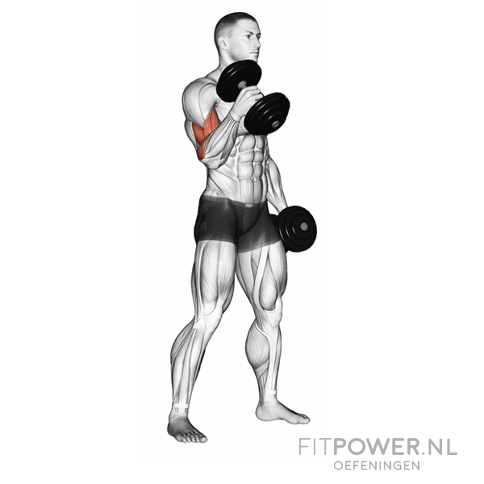

1.Barbell Curl
The standing barbell curl is the cornerstone of many bicep building routines. Grasp a barbell or Olympic bar at around shoulder width apart using an underhand grip (palms facing up).Stand straight up, feet together (you may be more comfortable putting one foot back for stability), back straight, and with your arms fully extended.The bar should not be touching your body.Keeping your eyes facing forwards, elbows tucked in at your sides, and your body completely still, slowly curl the bar up. Squeeze your biceps hard at the top of the movement, and then slowly lower it back to the starting position. Repeat for desired reps.

2.Dumbbell Curl
Stand holding a dumbbell in each hand with your arms hanging by your sides. Ensure your elbows are close to your torso and your palms facing forward. Keeping your upper arms stationary, exhale as you curl the weights up to shoulder level while contracting your biceps.Placing your thumb on the same side of the bar as your fingers increases peak contraction in the biceps at the top point of the movement. Hold the weight at shoulder height for a brief pause, then inhale as you slowly lower back to the start position.
3.Hammer Curl
The alternate hammer curl is a great exercise for the biceps and the forearms. Set up by grasping a set of dumbbells and standing straight up with the dumbbells by your sides. You should be using a neutral grip, meaning your palms are facing your body. Bend your arms slightly to keep the tension on the biceps. Keeping your body fixed and elbows in at your sides, slowly curl up the dumbbell of your weakest arm (for most people this is their left arm). Squeeze the bicep at the top of the movement, and then slowly lower the weight back to the starting position. Repeat the same movement for the other arm. This is one rep. Now repeat to complete the set!